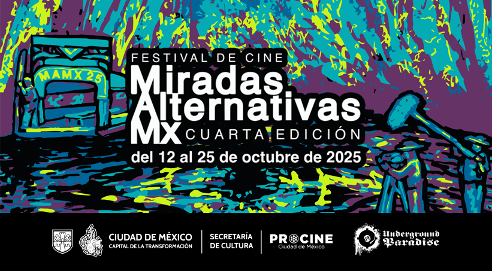

Después de tres ediciones fomentando la imaginación y la creatividad audiovisual en el suroriente de la Ciudad de México, regresa el Festival de Cine Miradas Alternativas Mx, cuarta edición: cosecha de horizontes, cuarta edición. Este año, el festival se destaca por su compromiso inquebrantable con la exhibición de cine mexicano y latinoamericano, centrándose en propuestas contemporáneas que exploran la rica diversidad cultural e identitaria de la sociedad.
Con una selección de piezas realizadas bajo diversas técnicas, incluyendo la animación, Miradas Alternativas Mx promete ser un escaparate de la apropiación cinematográfica y un laboratorio de ideas, ofreciendo una plataforma única para miradas emergentes y establecidas en el cine latinoamericano, particularmente el mexicano.
El objetivo central del Festival Miradas Alternativas Mx es democratizar la oferta cinematográfica, especialmente la de cine mexicano, en el territorio suroriental de la Ciudad de México, que comprende a Tláhuac, Xochimilco, Iztapalapa y Milpa Alta, así como la cultura expandida que se extiende al Estado de México y más allá. A través de este festival, buscamos fomentar el acceso a los derechos culturales de los públicos de la zona, promoviendo la apropiación audiovisual y la alfabetización cinematográfica activa.
¿Qué significa esto? Es el poder de contar "desde adentro", de ser protagonistas y dueños de nuestra propia imagen y relato. Ofreciendo una plataforma accesible y diversa, Miradas Alternativas Mx pretende empoderar a las comunidades locales, enriquecer su experiencia cultural y fortalecer su identidad a través del cine.
Este es un llamamiento audiovisual, dirigido tanto a quienes ven como a quienes hacen lo que vemos. Buscamos maneras diferentes de sentir la cultura mexicana por los nervios ópticos, celebrando cómo la imagen nos acerca, nos intima y nos sirve de mediación para comprendernos como individuos y en sociedad.
Realizamos exhibiciones y detonamos diálogos, donde públicos y creadores audiovisuales conviven, participando activamente en la construcción de nuevas narrativas, de futuros próximos y en la transformación de nuestra realidad. Cada película es un pulso, una provocación que fortalece el tejido comunitario a través del séptimo arte.
- Libertad creativa sin límites: podrán inscribirse trabajos mexicanos o extranjeros (de documental, ficción o experimental) sin restricción de duración y de cualquier año de producción. En Miradas Alternativas Mx, tu visión no tiene límites, permitiendo que tu narrativa dicte el formato.
- El suroriente como pantalla y motor de cambio: se aceptan todas las temáticas, con un enfoque especial en narrativas que expongan la identidad, representación, problemáticas y/o vivencias de las personas que habitan el territorio suroriental de la Ciudad de México, comprendido entre Tláhuac, Xochimilco, Iztapalapa y Milpa Alta, así como la cultura expandida que se extiende al Estado de México y más allá. Buscamos películas que no solo reflejen, sino que incitan a la reflexión y a la acción.
- Innovación y Diversidad Técnica: si tu historia rompe esquemas, utiliza técnicas no convencionales o explora el cine desde una perspectiva alternativa, ¡esta es tu plataforma! Celebramos la innovación cinematográfica en todas sus formas, desde la animación más disruptiva hasta las experimentaciones visuales, como herramientas para construir nuevas visiones de la realidad.
- La Apropiación Audiovisual en Primer Plano: Valoramos especialmente aquellos trabajos que evidencian un proceso de apropiación audiovisual por parte de las comunidades o que han sido realizados por personas que forman parte de las historias que narran. Buscamos filmes donde la cámara sea una extensión de la voz local y un instrumento de empoderamiento, utilizando también medios de producción accesibles como parte de esta democratización. Queremos que los directores sean tlacuilos de las "miradas alternativas" que dan forma y configuran nuestros futuros.
- Tu Cine es una Pregunta Vital y una Propuesta de Futuro: Más allá de las categorías, te invitamos a responder: ¿Quiénes somos en este territorio cambiante? ¿Cómo lo externo dialoga con lo propio? Queremos que tu cine sea parte de esta conversación vital que define nuestra identidad, ofreciendo nuevas perspectivas que inspiren a la transformación sociocultural.
- Para la inscripción es obligatorio enviar un archivo de video MP4 o MOV, Códec H.264, a alguna plataforma como Vimeo, Youtube, Google Drive, ICloud u otros, para visionado.
- Será responsabilidad de cada participante enviar su obra en el mejor formato en caso de que resulte seleccionada para su exhibición.
- Es imprescindible enviar la carta de derechos para formalizar la inscripción al festival de cine Miradas Alternativas Mx, cuarta edición, misma que se encuentra en la presente convocatoria.
- Se pueden inscribir más de una película por participante.
En un presente marcado por la incertidumbre, donde las certezas se desvanecen y los desafíos nos invitan a replantear todo lo que creíamos sólido y establecido, el Festival Miradas Alternativas Mx expande sus pantallas y horizontes para hacer un terreno fértil donde se puedan sembrar nuevas ideas, voces y formas de habitar el mundo.
Inspirados en la chinampa como metáfora viva de transformación sociocultural, resistencia y esperanza, convocamos a creadores y creadoras a cosechar, navegar, sembrar y florecer en este espacio que apuesta por la vida en movimiento, la transformación y la fuerza de lo colectivo.
Nuestras categorías son semillas, corrientes y raíces que reflejan la complejidad y vitalidad de nuestras realidades:
- Semilleros narrativos: historias fundacionales que exploran la memoria, los orígenes, las raíces de la identidad y los nuevos comienzos. Son las semillas del futuro plantadas con sabiduría ancestral y trazan el inicio de nuevos caminos en el suroriente de la Ciudad de México. Aquí nacen las visiones que darán forma al futuro.
- Flujos de realidad: películas que navegan las dinámicas y transformaciones contemporáneas, abordando los movimientos y resistencias de nuestros territorios, como la migración y las resistencias que atraviesan nuestros territorios, son historias en constante movimiento, como los canales chinamperos.
- Brechas para cultivar: historias que visibilizan las desigualdades y fragmentaciones sociales, pero también las grietas que abren oportunidades para la resistencia y la esperanza. Obras que nos invitan a sembrar en terrenos difíciles y hacer florecer nuevas convivencias, como los tlacuilos que visualizaban caminos y horizontes.
- Caminantes: relatos de autoconocimiento, exploración y transformación personal. Celebran el movimiento como un acto de valentía y apertura hacia nuevas formas de ser, existir y habitar el mundo, como navegantes que exploran nuevos horizontes internos y externos.
- Paisajes insurrectos: una revuelta de la imaginación en el que es posible pensar y sentir de otro modo, con otras y con otros historias que iluminan futuros inciertos, ofreciendo reflexión crítica y nuevas perspectivas. Son obras que trazan rutas posibles y señalan alternativas para ser partícipes y transformar el entorno.
Nuestras categorías no son un canal cercado que limita la visión, sino un mapa vivo y abierto para la exploración audiovisual. Han surgido como la síntesis de las profundas narrativas que hemos navegado y cosechado a lo largo de los años, revelando diversas formas de ver y construir el mundo desde el suroriente de la Ciudad de México. Son, en su esencia más pura, senderos que emanan de esta misma convocatoria. Manteniendo siempre abierto el flujo para la incorporación de nuevas perspectivas y miradas.
Los trabajos seleccionados serán elegidos por un comité jurado de primer nivel, compuesto por agentes culturales de gran trayectoria en el ámbito cinematográfico de la exhibición alternativa, con la intención de dotar de un carácter plural y diverso al festival Miradas Alternativas Mx. Tu trabajo será evaluado por figuras con profundo conocimiento y compromiso, asegurando una valoración especializada para cada propuesta.
En esta ocasión, se otorgarán tres premios, los cuales corresponden a:
- Premio Documental por $10,000*
- Premio Ficción por $10,000*
- Premio Experimental por parte de patrocinadores
*Cantidad en pesos mexicanos e incluyen IVA %16. Los premios se deberán facturar directamente por algún involucrado en la producción.
Además de los premios en efectivo, se podrán otorgar gratificaciones adicionales que aporten patrocinadores del festival.
¡Sé parte de las Miradas Alternativas que transforman el suroriente de la CDMX y construyen los futuros que imaginamos!
¡Inscribe tu película y deja tu huella en nuestra pantalla!